Source : Graphic Warning Labels on Cigarettes Are Scary,
but Do They Work?
Source : Communicating Health Information to Disadvantaged Populations
Source : How graphic photos on cigarette packs help smokers consider quitting
Source : Plain tobacco packaging- Wikipedia
Source : Warning images on cigarette packets 'raise young adults' knowledge about harms of smoking'
Source : Cigarette Package Health Warnings International Status Report